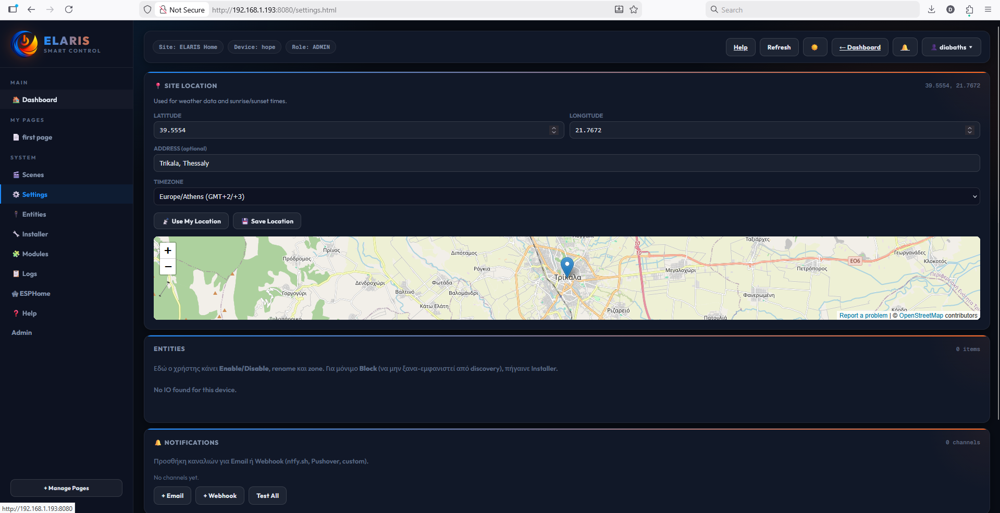

Module library
Organized catalog of automation capabilities, grouped by real-world purpose.
The app already shows that ELARIS is not a random rule builder. It is a platform with reusable automation modules for climate, lighting, water, shading, energy and custom engineering logic.

Switch, PIR, presence, lux, dimming and schedule-aware behavior.
Zones, room temperatures, relays, shared pumps and practical heating control.
Wind, rain, lux, end-stops and motor travel logic.
Valves, pumps, leak signals, water meter inputs and field-friendly control.
Collector temperature logic, pumps and auxiliary heating decisions.
Real-time power, daily usage insight and a strong base for energy-driven automation.
Protective and threshold-driven control when power demand needs to stay in range.
Scenario-based lighting with dimming, PIR logic, schedules and time windows.
Custom machine or process logic where feedback and special conditions matter.
Simulated occupancy for real-world away modes and security-minded use.
Strong fit for plant rooms, recirculation, pump control and engineered thermal projects.
When the project needs a special module, ELARIS can grow without losing structure.
ELARIS is under heavy development and the module catalog will keep growing. The direction is to keep shipping new domain logic where real installations demand it.
Core modules already cover climate, lighting, water, shading, energy and custom engineering logic.
More building, utility and plant modules that reuse the same installer + entity + module pattern.
A broad library where a project feels custom while still staying inside one ELARIS language.